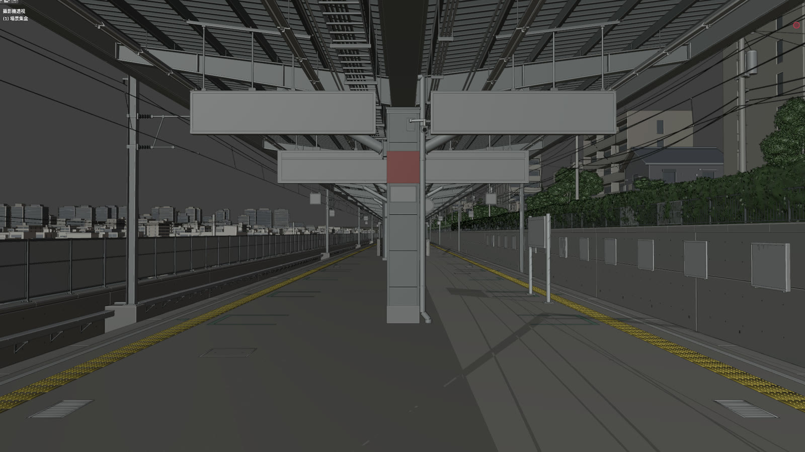
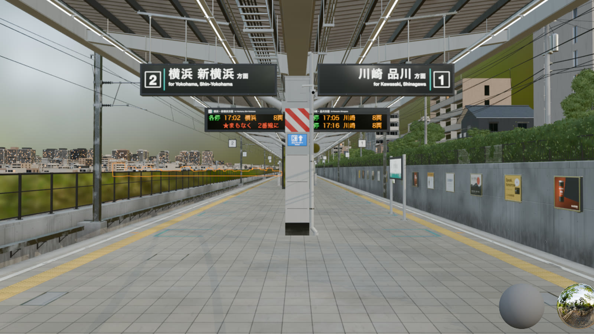
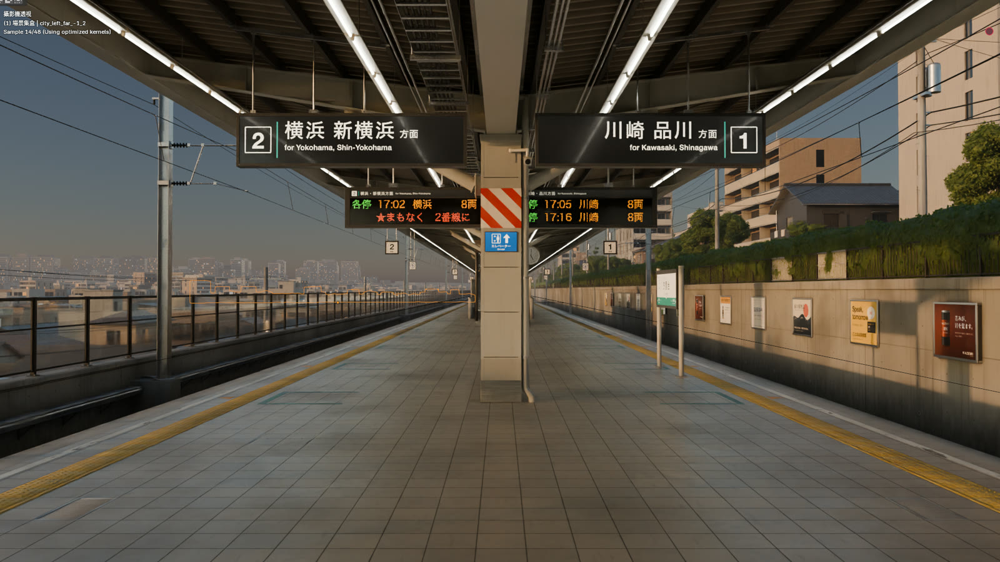
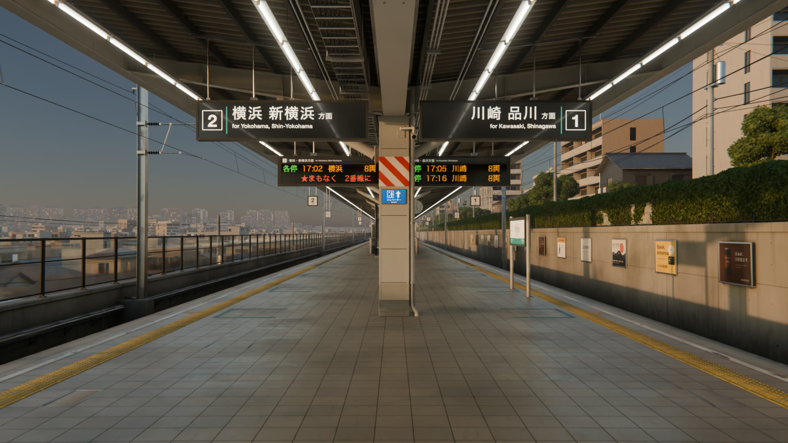

正片
12.5 秒 · 300 格 · 1920×1080 · 24 fps
00.0 / 12.5 s
汐見台 2番線 製作規格Shiomidai Platform 2
| 建模 | Python（bpy / bmesh）6 個模組 42 步，經 Blender MCP 逐步送進 GUI Blender | 2,190 萬面 |
| 材質 | 程序化節點：磁磚接縫與磨損、混凝土水痕、烤漆掉漆與積塵、鋼軌鏽蝕 | 28 種 |
| 貼圖 | 只有日文字標示：方向牌、LED 看板、站名標、廣告，用 HTML 排版後截圖 | tex/ |
| 打光 | 6° 低角度夕陽 ＋ 日光燈列 ＋ 多重散射天空，AgX 色彩 | 7800 K |
| 渲染 | Cycles · Metal GPU · 96 spp 自適應取樣 · OIDN 降噪 | 約 37 秒／格 |
製作花絮
建模、上材質、打光的 Blender 畫面截圖串成縮時同一個鏡頭，三個階段
從 Blender 視窗直接截下



製作筆記
經 MCP 一步一步建
Blender 官方 MCP 外掛開一個本機 socket，每個建模步驟是一次請求，送一段 Python 進正在開著的 Blender；每一步完成後再請 Blender 截一次自己的視窗，花絮就是這些截圖。
全部自己建模
月台、頂棚鋼骨、導盲磚凸點、鋼軌斷面、道碴、電車線、擋土牆、坡地住宅與遠方市街都是程式生成；沒有用 Tripo 或任何下載模型。站名「汐見台」是虛構的，看板上也沒有真實鐵道公司的標誌。
材質是節點，不是照片
地磚用格狀座標算接縫、每塊磚的色差與光澤，再疊上走道磨亮與角落髒污；混凝土用雜訊與 Ambient Occlusion 做水痕和積灰。只有需要日文字的地方另外產生貼圖。
兩種光
太陽放在左後方 6° 仰角，斜斜照亮柱子正面與右側擋土牆；頂棚下的日光燈列是發光燈管加上一層朝上的補光，讓折板屋面不會黑成一片。天空用多重散射大氣模型。
遠景的空氣
市街與遠山的材質依距離混入天空色，模擬傍晚的空氣透視；遠山壓到仰角 1° 以下，月台才顯得高。
渲染
正片在背景 Blender 裡渲染 300 格，每格約 37 秒，再用 ffmpeg 編成 H.264。花絮的字幕條在無頭 Chrome 排版後串接，結尾淡入正片。